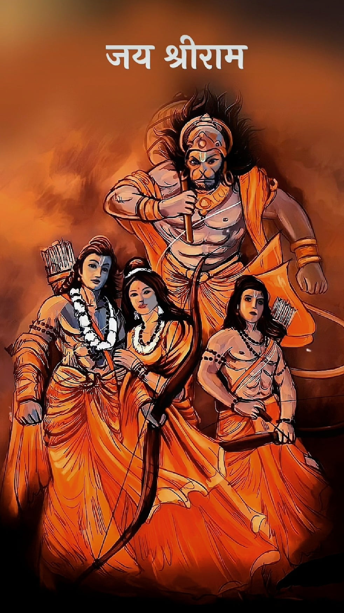

|  | Charan Sharan Main Aayi Ke, Dharun Tihara Dhyaan, Sankat Se Raksha Karo, Sankat Se Raksha Karo, Pawanputra Hanuman… Durgam Kaaj Banaay Ke, Kinhen Bhakt Nihaal, Ab Mori Vinti Suno, Ab Mori Vinti Suno, He Anjani Ke Laal… Haath Jod Vinti Karun, Suno Veer Hanuman, Kashton Se Raksha Karo, Kashton Se Raksha Karo, Ram Bhakti Dehun Daan, Pawanputra Hanuman… |
| DOHA | |
|---|---|
Shri Guru Charan Saroj Raj,Nij manu Mukuru Sudhaari। Barnau Raghubar Bimal Jasu,Jo Daayeku Phal Chaari॥ Buddhiheen Tanu Jaanike,Sumirau Pavan-Kumaar। Bal Buddhi Bidya Dehu Mohi,Harahu Kales Bikaar॥ | |
| Chaupai
|
|
| Jai Hanuman Gyaan Gun Sagar।Jai Kapis Teehun Lok Ujagar॥ Ram Doot Atulit Bal Dhama।Anjani-Putra Pavansut Nama॥ Mahabir Bikram Bajrangi।Kumati Nivaar Sumati Ke Sangi॥ Kanchan Baran Biraaj Subesa।Kaanan Kundal Kunchit Kesa॥ Haath Bajra Aau Dhwaja Biraaje।Kaandhe Moonj Janeu Saaje॥ Sankar Suvan Kesarinandan।Tej Prataap Maha Jag Bandan॥ Bidyabaan Guni Ati Chaatur।Ram Kaaj Karibe Ko Aatur॥ Prabhu Charitra Sunibe Ko Rasiya।Ram Lakhan Sita Man Basiya॥ Sukshma Roop Dhari Siyahin Dikhawa।Bikat Roop Dhari Lanka Jarawa॥ Bheem Roop Dhari Asur Sanhaare।Ramchandra Ke Kaaj Sanwaare॥ Laaye Sajivan Lakhan Jiyaaye।Shri Raghubeer Harashi Ur Laaye॥ Raghupati Keenhi Bahut Badai।Tum Mum Priy Bharat Hi Sam Bhai॥ Sahas Badan Tumhro Jas Gaavein।As Kahi Shripati Kanth Lagavein॥ Sankadik Bramhadi Munisa।Narad Sarad Sahit Ahisa॥ Jam Kuber Digpaal Jahan Te।Kabi Kobid Kahi Sake Kahaan Te॥ Tum Upkaar Sugreevhin Kinha।Ram Milaaye Raajpad Dinha॥ Tumhro Mantra Vibhishan Maana।Lankeswar Bhaye Sab Jag Jana॥ Jug Sahastra Jojan Par Bhaanu।Lilyo Taahi Madhur Phal Jaanu॥ Prabhu Mudrika Meli Mukh Maahi।Jaldhi Laanghi Gaye Achraj Naahi॥ Durgam Kaaj Jagat Ke Jete।Sugam Anugraha Tumhre Tete॥ Ram Dooare Tum Rakhwaare।Hoat Na Aagya Binu Paisare॥ Sab Sukh Lahai Tumhari Sarna।Tum Rakhshak Kaahu Ko Darna॥ Aapan Tej Samharo Aapai।Teeno Lok Haank Te Kaanpen॥ Bhoot Pisaach Nikat Nahi Aave।Mahabir Jab Naam Sunave॥ Naasai Rog Harai Sab Peera।Japat Nirantar Hanumat Beera॥ Sankat Te Hanuman Chhoodave।Man Krama Bachan Dhyaan Jo Laave॥ Sab Par Raam Tapasvi Raja।Tin Ke Kaaj Sakal Tum Saaja॥ Aur Manorath Jo Koi Laave।Soi Amit Jivan Phal Paave॥ Chaaro Jug Partaap Tumhara।Hai Parsiddh Jagat Ujiyara॥ Saadhu Sant Ke Tum Rakhwaare।Asur Nikandan Ram Dulaare॥ Asht Siddhi Nau Nidhi Ke Daata।As bar Deen Janki Maata॥ Ram Rasayan Tumhre Paasa।Sada Raho Raghupati Ke Daasa॥ Tumhre Bhajan Ram Ko Paave।Janam Janam Ke Dukh Bisraave॥ Antakaal Raghubar Pur Jaayee।Jahan Janam Hari-Bhakt Kahayee॥ Aur Devta Chitt Na Dharayi।Hanumat Sei Sarb Sukh Karayi॥ Sankat Kate Mite Sab Peera।Jo Sumirai Hanumat Balbira॥ Jai Jai Jai Hanuman Gosaai।Kripa Karahun Gurudev Ki Naai॥ Jo Sat Baar Paath Kar Koi।Chhootahin Bandi Maha sukh Hoyi॥ Jo Yeh Padhe Hanuman Chalisa।Hoye Siddhi Saakhi Gaurisa॥ Tulsidas Sada Harichera।Kije Naath Hridaya Mahn Dera॥ |
|
| Doha
|
|
|
Pavantanaye Sankat Haran,Mangal Moorti Roop। Ram Lakhan Sita Sahit,Hridaya Basahu Soor Bhoop॥ |